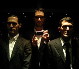
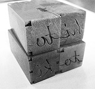
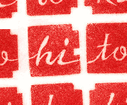

THE WORD
The word Hitotoki is a Japanese noun comprised of two components: hito or “one” and toki or “time,” and is often translated as “a moment.” In common usage, it can be used to describe any brief, singular stretch of time (if we share a meal someday, you can call that a hitotoki).
THE SITE
Hitotoki launched in May 2007 in Tokyo by Paul Baron, Craig Mod and Chris Palmieri, as a collaboration between Craig Mod and Tokyo web design group AQ.
OUR FEARLESS EDITORS
Hitotoki Tokyo in Japanese is edited by the unrelenting iron fist of Kenichi Shinjo, a freelance writer of novels, video game guidebooks, and guides to Japanese Traditional Culture like Noh. He writes about Japanese Culture of various periods, and directs content creation for major portal websites. He also works as a web consultant.
Hitotoki New York is edited by the strikingly handsome Matt Rand, a writer living in Brooklyn, NY. He graduated from the University of Pennsylvania in 2001, and spent four years as a reporter and writer at Forbes. He currently passes his days involved in all sorts of fun investment research.
Hitotoki London is edited by Oli, a coward and amateur angler. Years ago he had the chance to design the Tokyo level for Tony Hawk's on Playstation but was too lazy to be bothered. To this day it is a source of deep regret and shame.
Hitotoki Tokyo in English is edited by Darryl Wee. Darryl graduated from Harvard College in 2006 majoring in French, and as a logical next step moved to Tokyo at the end of the year. He works as an editor and translator for Tokyo Art Beat, and does freelance work as well.
DESIGN NOTES
The Hitotoki logo is composed of four hankos, traditional Japanese personal stamps. Each was carved in stone by Eiko Nagase, kissed, inked, and pressed to tissue paper, resulting in what you see above.
The hankos can be seen as city blocks, the space between them the little pockets we carve out for ourselves. Each hanko silloutte is an abstracted katakana character corresponding with the inlaid roman script. Our 435-page identity style guide allows for creative re-positioning of the blocks to fit the logo into different layout contexts. Sadly, the application of the “Bevel and Emboss” filter is strictly prohibited.
Hitotoki display type is mostly set in Odile by Sibylle Hagmann, with a touch of Maple by Eric Olson here and there. Much of Hitotoki’s artwork is from Flickr's growing pool of CC-licensed photos.
TECHNICAL HOBIDY BOBBIDY
Hitotoki is built with Expression Engine and the Google Maps API. We had to do some light hacking and modifying to get everything to our liking, but we find EE to be quite the gentleman to work with. Hitotoki is also built with Dotour Ice Coffee.
Feeds, feeds, feeds
You want some RSS 2.0? Oh, we've got RSS 2.0:
Send love letters to:
what@hitotoki
Send non-explosive packages to:
Hitotoki
2-20-4 Sunny Side Flats 301
Kohinata, Bunkyo-ku
Tokyo, Japan 112-0006
Our Editors:
Founders: Email Paul, Craig & Chris
Tokyo (en): Email Darryl
Tokyo (jp): Email Shinjo-san
New York: Email Matt Rand
London: Email Oli
Shanghai: Email Panthea Lee
Spread Hitotoki
Show your love for hitotoki. Paste this code into your blog!
The Other Stuff We Do
Facetime Type Designer Interviews
Interested in sponsoring Hitotoki? Contact us at sponsors@hitotoki.